一、 Alpine 简要介绍
Alpine 的意思是“高山的”，比如 lpine plants高山植物，Alpine skiing高山滑雪、the alpine resort阿尔卑斯山胜地。
Alpine Linux 网站首页注明“Small！Simple！Secure！Alpine Linux is a security-oriented, lightweight Linux distribution based on musl libc and busybox.”概括了以下特点：
1. 小巧： 基于Musl libc和busybox，和busybox一样小巧，最小的Docker镜像只有5MB；
2. 安全： 面向安全的轻量发行版；
3. 简单： 提供APK包管理工具，软件的搜索、安装、删除、升级都非常方便。
4. 适合 容器使用： 由于小巧、功能完备，非常适合作为容器的基础镜像。
二、 Alpine 本地安装
Alpine Linux 是一个完整的操作系统，像其他操作系统一样，可以将 Alpine 安装到本地 硬盘中。我们可以创建一个 VirtualBox 虚拟机，在 VirtualBox 下安装该系统，以便进行 测试使用。具体安装过程，参见我写的另一篇文章《Alpine linux硬盘安装》，地址： http://blog.csdn.net/csdn_duomaomao/article/details/76053229。
主要是在安装过程中，指定一些电脑的基本设置，比如键盘布局、主机名、网卡、IP地址、 root口令修改、时区设置、软件仓库地址、SSH服务器、NTP客户端、系统安装方式、磁盘格 式化等。
三、 Alpine 在 Docker 下运行
1. Docker 下的运行
官方Alpine镜像的文档：http://gliderlabs.viewdocs.io/docker-alpine/
可以使用 Docker Toolbox，创建一台 Docker 虚拟主机，在该主机的 Docker 环境下运行 alpine 的 Docker容器。该容器就是一个 Alpine Linux 系统，
docker pull alpine docker run -it --name myalpine alpine
2. 作为 Docker 容器的基础镜像
以Alpine为基础镜像，创建一个MySQL容器，镜像大小只有36.5MB，Ubuntu系统作为基础镜 像，镜像大小有184MB，
Dockerfile文件的内容：
FROM alpine:3.6 RUN apk add --no-cache mysql-client ENTRYPOINT ["mysql"]
创建一个test/mysqlclient:1.0镜像
docker build -t test/mysqlclient:1.0
四、 Alpine 的配置和使用
4.1网络相关文件
#主机名文件 /etc/hostname #使用新设置的主机名立刻生效,执行如下命令： hostname -F /etc/hostname #主机IP和域名映射文件 /etc/hosts #文件内容为： 192.168.99.100 alpine.csdn.net #DNS服务器配置文件 /etc/resolv.conf #文件内容为： nameserver 218.2.135.1 nameserver 202.102.24.35 #网卡配置文件 /etc/network/interfaces #文件内容为： auto lo iface lo inet loopback auto eth0 iface eth0 inet static address 192.168.3.166 netmask 255.255.255.0 gateway 192.168.3.254 #修改完相关配置以后，重新启动网络服务： `/etc/init.d/networking restart` 网络相关的文档，详细参见：https://wiki.alpinelinux.org/wiki/Configure_Networking
4.2更新国内源
#Alpine的源文件为： /etc/apk/repositories， #默认的源地址为： http://dl-cdn.alpinelinux.org/ #可以编辑源文件 /etc/apk/repositories， #采用国内阿里云的源，文件内容为： https://mirrors.aliyun.com/alpine/v3.6/main/ https://mirrors.aliyun.com/alpine/v3.6/community/ #如果采用中国科技大学的源，文件内容为： https://mirrors.ustc.edu.cn/alpine/v3.6/main/ https://mirrors.ustc.edu.cn/alpine/v3.6/community/
4.3 软件包管理工具 apk 的基本使用
alpine 提供了非常好用的apk软件包管理工具，可以方便地安装、删除、更新软件。
#查询openssh相关的软件包 apk search openssh #安装一个软件包 apk add xxx #删除已安装的xxx软件包 apk del xxx #获取更多apk包管理的命令参数 apk --help #比如安装常用的网络相关工具： #更新软件包索引文件 apk update #用于文本方式查看网页，用于测试http协议 apk add curl #提供了查看网络连接的协议端口的命令ss，可以替代netstat命令 apk add iproute2 #drill命令可以替代dig和nslookup DNS查询命令 apk add drill #测试192.168.3.166的80端口，查看web服务是否能正常访问。 curl 192.168.3.166 #查看建立的TCP连接 ss -ta #查询域名的信息 drill blog.csdn.net @8.8.8.8 #根据IP地址，反向查找域名 drill -x 8.8.8.8 @47.94.71.34
4.4 开启 SSH 服务
#安装openssh-server服务器 apk add openssh-server #修改配置文件/etc/ssh/sshd_config， #如果要想使用root用户远程管理，需要修改参数为： PermitRootLogin yes #将ssh服务配置为开机自动启动 rc-update add sshd #如果你想立刻生效，可以执行命令： /etc/init.d/sshd restart
4.5 安装 nginx
#安装Nginx软件并更新到最新， apk add --update nginx #手工启动Nginx /etc/init.d/nginx #将Nginx添加到启动服务中，下次开机自动运行 rc-update add nginx #测试Nginx服务是否正常,使用curl访问， #默认配置会返回nginx的404页面错误，标明服务已正常： curl 192.168.3.166
【附图】
- 在Docker主机中，下载alpine镜像 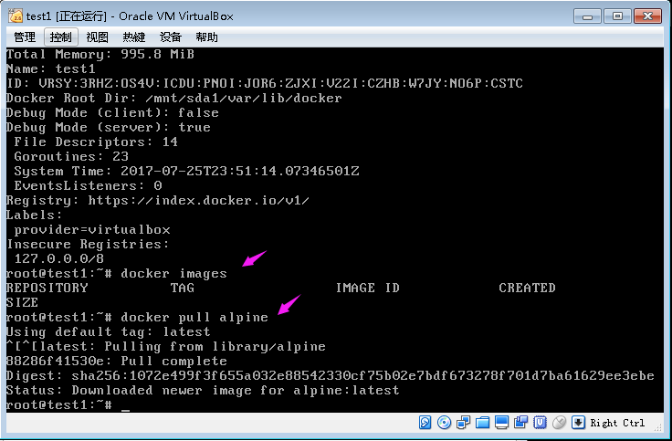
- 查看镜像信息，运行alpine容器，查看容器信息 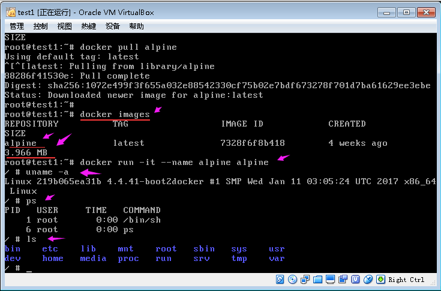
- 在Alpine容器系统中安装常用网络工具-完成部分安装 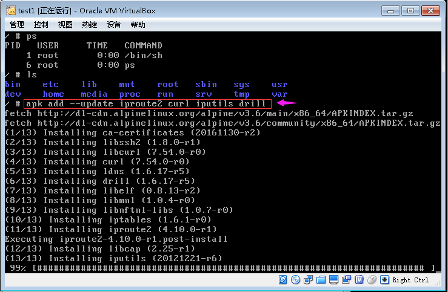
- 完成常用网络工具的安装 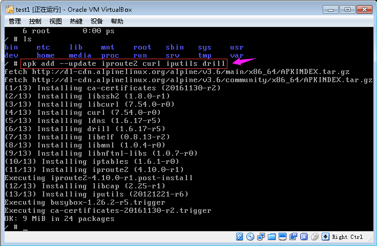
- 在容器中，查看Alpine容器的IP地址 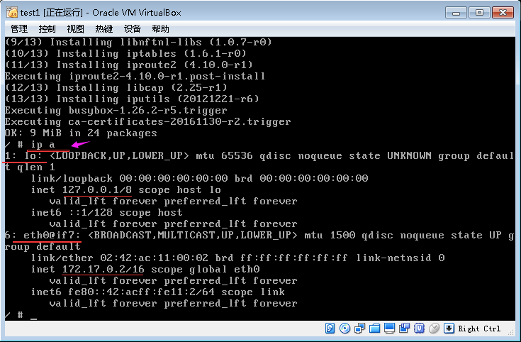
- 在Docker虚拟主机中使用docker build生成Docker镜像的过程 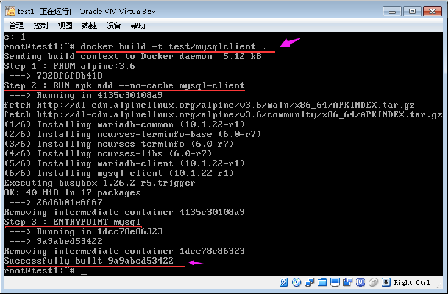
- 生成Docker镜像的大小，只有36.5MB 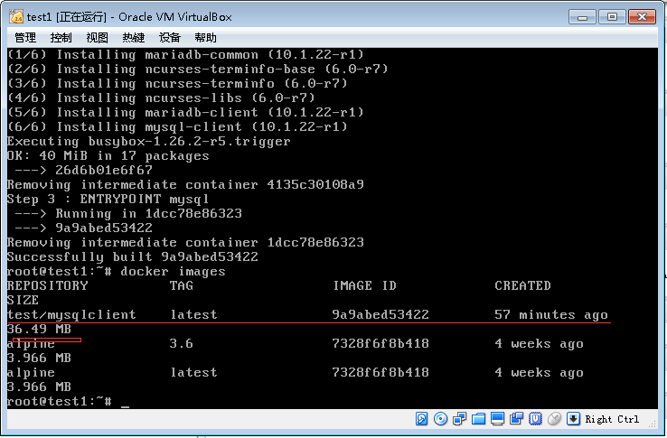
- 网络相关配置文件及内容 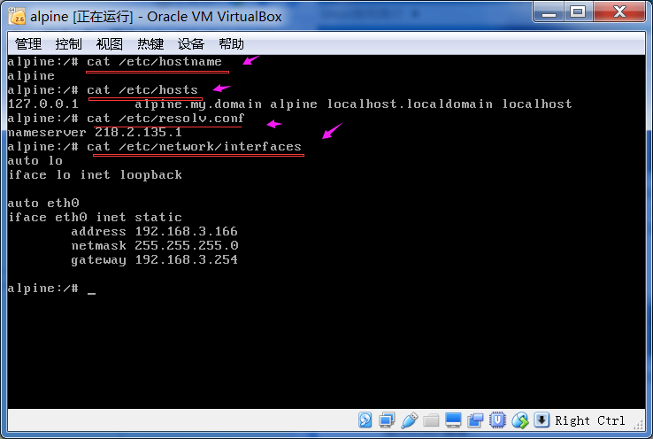
- 重启网络服务networkingrestart 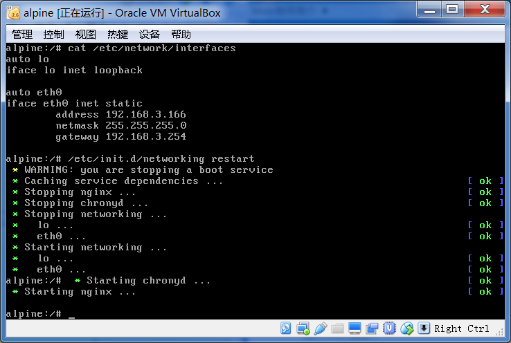
- 软件仓库源的文件内容 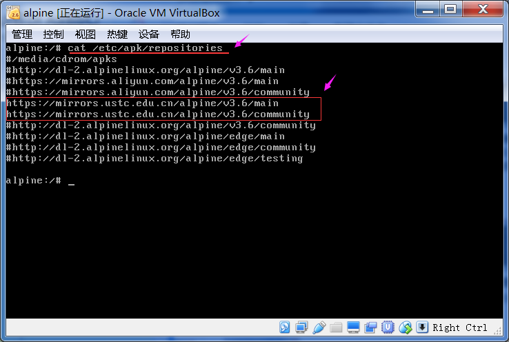
- apk软件包管理常用命令-updae-search-add-del 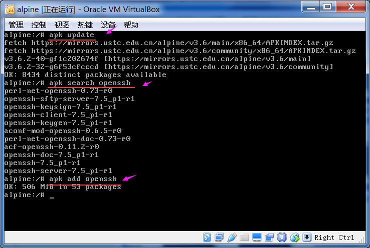
- 使用curl查看Nginx网站的页面反馈-查看TCP网络状态 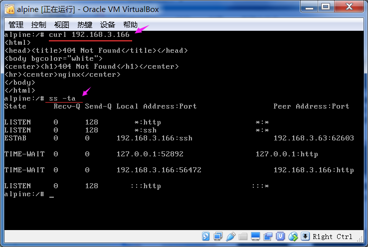
- 使用drill查询blog.csdn.net网站域名信息1 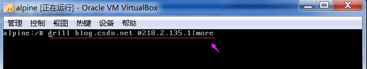
- 使用drill查询blog.csdn.net网站域名信息2 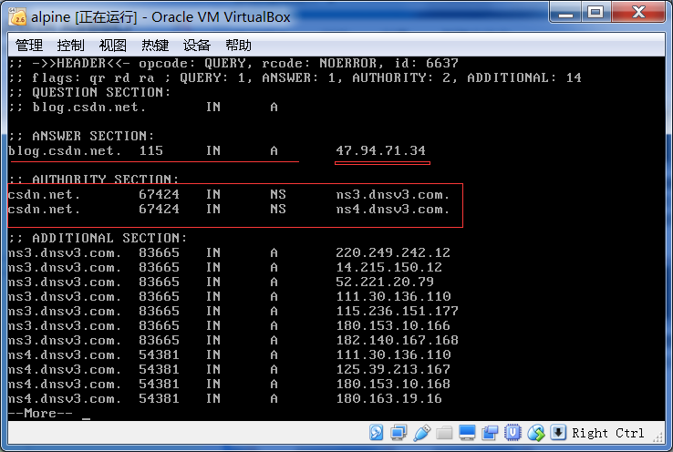
- 修改ssh配置文件，运行Root用户使用ssh登录 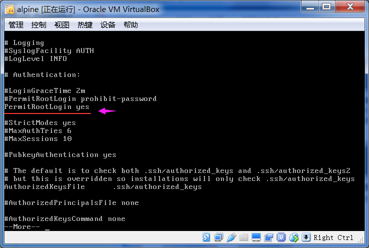
- 使用Xshell客户端工具，ssh登录到3.166的Alpine机器上 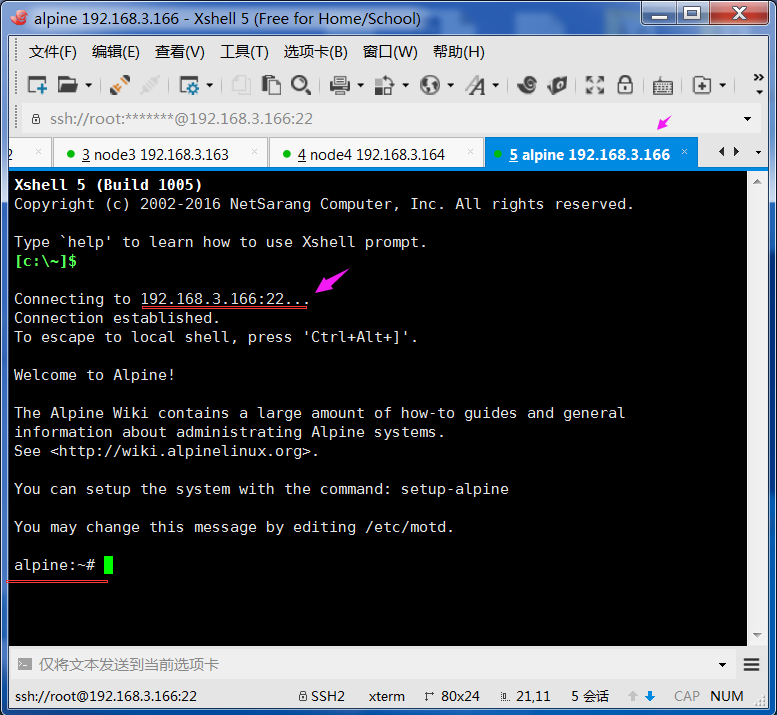
- 更新APK软件包仓库的索引文件 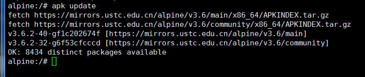
- 安装Nginx 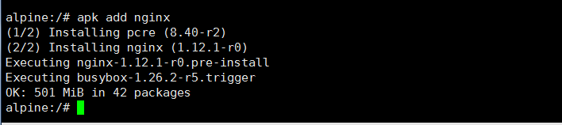
- 重启Nginx服务-将Nginx设置为开机自动启动 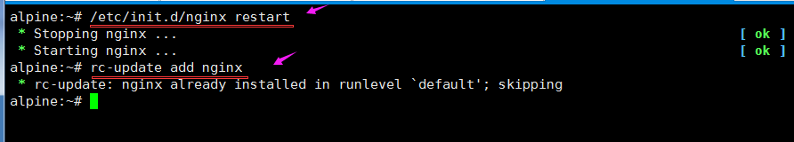
【注意事项】:
因为Alpine采用的是musl libc，不是通常用的glibc，在使用DNS时，Alpine（musl libc） 在DNS解析文件/etc/resolv.conf中，不使用domain或search选项。在使用DNS作为服务发现 时，要查看相应的文档来解决。相关链接： http://gliderlabs.viewdocs.io/docker-alpine/caveats/
【心得体会】：
网站上内容非常丰富，英文也非常简单，几乎所有的问题都能在该网站上找到答案，强烈推 荐该网站。
【参考链接】：
Alpine Linux package management
http://wiki.alpinelinux.org/wiki/Alpine_Linux_package_management
Alpine Linux，一个只有5M的Docker镜像
http://www.infoq.com/cn/news/2016/01/Alpine-Linux-5M-Docker
Alpine Linux源使用帮助
http://mirrors.ustc.edu.cn/help/alpine.html
Alpine Linux配置使用技巧【一个只有5M的操作系统（转）】
http://www.cnblogs.com/zhangmingcheng/p/7122386.html
docker（10）：virtualbox安装使用alpinelinux
http://blog.csdn.net/freewebsys/article/details/53638227